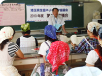
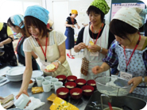
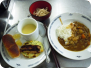

|
|
＜滝澤会長あいさつ＞ 今年も米消費拡大推進事業の一環として米粉の学習と調理実習、埼玉のお米『彩のかがやき』の試食を行います。今日は米粉の調理を体験し、教わったことをぜひ家庭や地域で広めていただければと思います。 1.米粉の学習(講師：関東農政局消費流通課より) ・米と小麦の硬さを体験しました。 ・最近、米粉も技術が向上し大変細かい粒子の物が作られるようになりました。米粉の優れている点は、アミノ酸バランスが優れていること、低吸油であること(米粉21%小麦粉38％）、ダマになりにくいことがあげられます。価格が小麦粉より高いのですが、少しずつ皆さんが食べることで食料自給率も上がります。 ・県内米粉扱い事業所紹介 ＜質疑応答：○は質問、→は答え＞ ○食料自給率の“料”と、食糧の“糧”の違いは。 →食料は主食以外の食べ物について、食糧は主食の食べ物について使います。 ○米粉に種類はあるのですか。 →グルテンを含んだ米粉ミックス等あります。小麦粉のように薄力、中力、強力も最近できたという事です。米の種類によっても特性があります。 2.米粉の調理実習と試食 ・“ライスフラワー”クッキングコンテストの応募作品をアレンジした｢じゃがいももち｣の調理、「今日の食材」、各生協からの試食品、試食品のお気に入り度投票についての説明がありました。 3．交流 テーブルごとに、｢米粉｣｢各生協からの試食品｣｢全体の感想」について意見を出し合いました。 ＜アンケートから＞ ・手軽に米粉を使えそうです。米粉を広げていきたいです。 ・米粉製品が多いことに驚きました。もちもち感が○。 ・他生協との交流がとてもよかったです。交流を大切にしていきたいです。 |